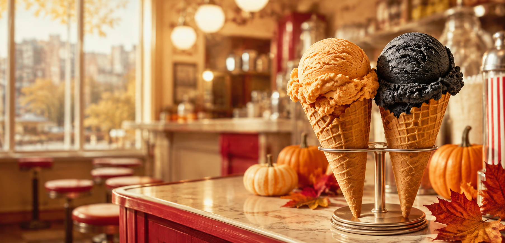

Guest Book
★★★★★
Worth the climb up the hill, every single time.

Fall at Hyde & Union Pumpkin meets black licorice. Two unmistakable seasonal scoops, handmade in our San Francisco parlor for a limited time. See Fall Flavors Visit Hyde & Union
The original corner is still calling.
Plan a stop at the original Swensen’s parlor in San Francisco.
Plan Your Visit
Visit Hyde & Union
The original corner is still calling.
Plan a stop at the original Swensen’s parlor in San Francisco.
Plan Your Visit
 Our story
Still made by hand, right here.
Meet the people and classic recipes behind every batch since 1948.
How We Make It
Our story
Still made by hand, right here.
Meet the people and classic recipes behind every batch since 1948.
How We Make It
Classics, parlor originals, and a rotating seasonal — all made by hand in our own kitchen.

Pure bourbon vanilla with generous chunks of Oreo cookies throughout.

Old-fashioned vanilla packed with chocolate chips and pieces of chocolate chip cookie dough.

Rich chocolate ice cream ribboned with sticky peanut butter for a salty-sweet parlor favorite.
Generations of San Franciscans have made our little corner part of their story. These are the words they leave behind.
Worth the climb up the hill, every single time.


Established in 1948, Swensen's is your local ice cream shop in San Francisco and the original location of the Swensen's franchise — home to fresh-made, old-fashioned ice cream made in-house from classic recipes and the best possible ingredients.
All of our ice cream is made by hand on-site, using the freshest ingredients.
From chocolate, vanilla, strawberry and raspberry to Swiss orange chip, cookie dough and seasonal rotations, every scoop carries decades of recipe-making. House-made waffle cones and hand-drizzled caramel are part of the delicious details.
Gift cards for future scoops, plus shirts and hoodies for foggy San Francisco days.